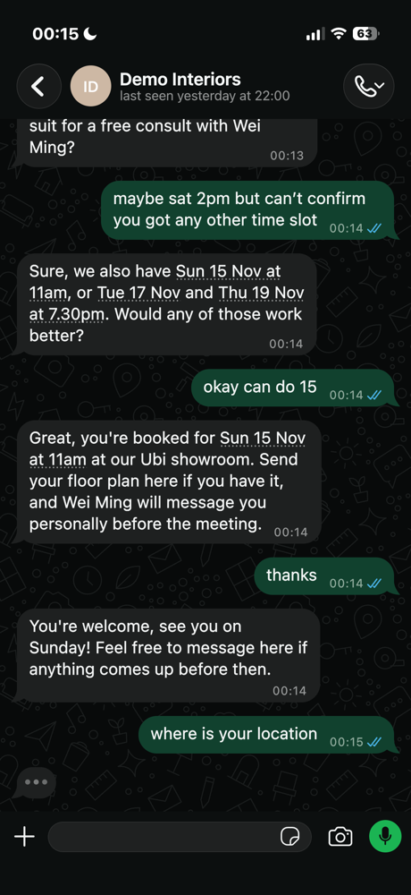

The leak
The homeowner who went quiet didn't lose interest. Someone else answered first.
You already pay for enquiries: Qanvast, ads, your website, referrals. The money is spent the moment they message. What happens in the next hour decides who gets the consult.
- Up to 5
firms can get the same Qanvast request. The homeowner talks to whoever answers.
- ~21x
more likely to qualify a lead when you reply within 5 minutes instead of 30, in an MIT study of web leads.
- 10pm
is when homeowners scroll and enquire. It's also when you're asleep, on site tomorrow, or with your family.
Sources: Qanvast's own FAQ; Oldroyd, MIT / InsideSales lead response study (2007), US web leads.
Watch it work
Enquiry at 12:12am. Booked by 12:14am.
A real chat from a real phone with our assistant, running as a demo firm. No one was typing on our side.
- 00:12
Homeowner messages. The assistant replies in seconds.
- 00:13
It asks area, keys and budget, one at a time, like a person would.
- 00:14
The first slot doesn't suit. It offers others that are actually free.
- 00:14
Booked. The designer gets a summary. The homeowner gets a confirmation.

What you get
Everything from first message to booked consult. Done for you.
You don't learn new software. You approve your answers, we do the rest.
- 01
Every enquiry answered in under a minute
On your main WhatsApp number, any hour, in English or Chinese.
"We're on site, we can't reply fast."
- 02
Your qualifying questions, asked for you
Property type, scope, budget, keys, location. One at a time, in your firm's tone.
"Half our consults are tyre-kickers."
- 03
Consults booked into your real calendar
Only slots that are actually free. It moves and cancels under your rules too.
"Back-and-forth on timing kills it."
- 04
A lead summary to your designer
Name, property, scope, budget, timeline and slot, the moment it's booked. Nothing else pings them.
"My team won't read another app."
- 05
Quiet leads followed up, 3 times
Worded from the actual chat, then marked cold. Nobody has to remember.
"We forget to chase."
- 06
Your answers, written for you
One 30-minute call plus a few past chats. We write the SOP, you approve it.
"I don't have time to set this up."
- 07
Tested on your own past enquiries first
Before it goes live, you read how it would have answered them.
"What if it says something wrong?"
- 08
Your existing clients kept out
Their numbers are switched off before go-live. Reply from your phone and it steps back from that chat.
"Will it message my current clients?"
- 09
Before and after numbers
Your baseline first, then enquiries, consults and reply time weekly for 4 weeks, monthly after. Every lead logged in a spreadsheet you own.
"How will I know it's working?"
Your risk
You see it working before you pay a cent.
- A demo under your firm's name
Before you pay anything, you message it yourself and watch it answer as your firm.
- No setup fee
Founding firms pay S$0 to set up. Normally S$2,000.
- Monthly starts at go-live
Not at signing. You don't pay to wait.
- Everything stays yours
Your number, your WhatsApp account, your lead sheet. Leave and you keep it all.
Price
S$2,000 to set up. Founding firms pay S$0.
Same assistant, same setup work. The first three firms skip the setup fee and only pay monthly, from the day it goes live.
After the first three firms
SetupS$2,000
MonthlyS$385 / mo
- 4 hours of changes and new answers each month
- Extra features and connections at S$110 an hour
- Plus your own AI usage, about S$30 to S$200 a month
Founding firm · 3 places
SetupS$2,000S$0
MonthlyS$385 / mo
- 4 hours of changes and new answers each month
- Extra features and connections at S$110 an hour
- Plus your own AI usage, about S$30 to S$200 a month, billed to your own account
S$385 a month is under 1% of a single S$40k renovation.
AI usage grows with the number of homeowners who message you. If yours hits S$200, you're about to have the best month of your life.
Founding firms
3 firms. Then the founding rate closes.
We're new, so we have no client results to show you yet. That's why the first three firms pay no setup fee. In return you share your numbers before and after, join a 15-minute check-in each week for the first month, and tell people if it worked. After the third firm, setup is S$2,000.
This is for you if
- You're a Singapore ID firm and most enquiries come in on WhatsApp
- You get about 5 or more new enquiries a week
- You'll spend 15 minutes a week with us for the first month
Not for you if
- You have a sales team answering enquiries all day
- You want it to quote prices to homeowners
Questions owners ask
Will it quote prices?
No. Pricing questions are moved to the consult, where your designer handles them.
What if it gets asked something it doesn't know?
It tells the homeowner it's checking with the team, stops, and sends you a "needs a person" message. It never makes things up.
Do I lose my WhatsApp Business app?
No. Same number, and the app keeps working beside it. Our own number runs both.
How much is it?
Founding firms: no setup fee, then S$385 a month with 4 hours of changes included, plus your own AI usage of about S$30 to S$200 a month. After the first three firms, setup is S$2,000. Extra features and connections are S$110 an hour.
How long until it's live?
We give you an estimate at kickoff, not a promise. It depends on WhatsApp's approvals and on how much your firm already has set up. Fast is within a week, slow can take a month. Either way, you don't pay until it's live.
Next enquiry comes in tonight. Who answers it?
Message our assistant now, at any hour, and watch how fast the reply comes. Ask it how it would work for your firm and whether one of the three places is still open.